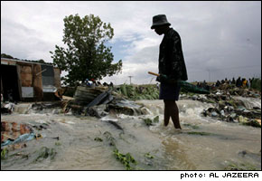
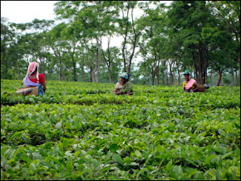
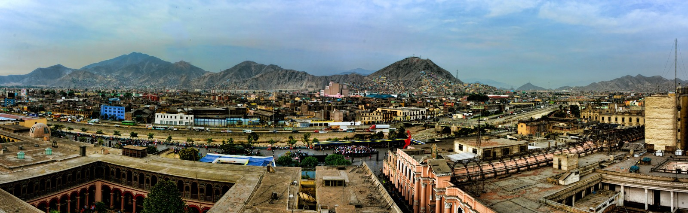
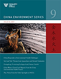

Rising above the Floods in Malawi

MALAWI — With support from the Danish International Development Agency (DANIDA), the Southern Africa Development Community (SADC) Water Division has initiated projects in Malawi, Mozambique, Namibia and Zambia whose aim is to demonstrate that water – including 'problem water' – can be managed and developed in a manner that maximizes economic and social welfare without compromising the environment.
Read more here.
Source: source name
Posted On: 2008-03-03T00:00:00
Posted By: Circle of Blue



Content Date: 2008-03-03
Download Date: 2021-05-12
Document ID: L0C04BHRW